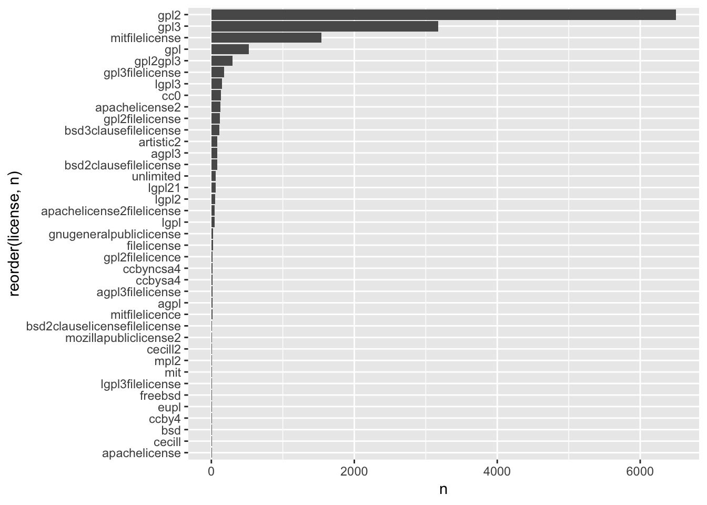

Chapter 2 Introduction
A quick dive into the CRAN package database can give us an overview of how complex licensing is and of how the community is making a lot of different choices.
## [1] "2019-02-21"db <- tools::CRAN_package_db()
db <- thinkr::clean_names(db)
db$license <- tolower(db$license)
library(tidyverse)## ── Attaching packages ────────────────────────────────────── tidyverse 1.2.1 ──## ✔ ggplot2 3.1.0 ✔ purrr 0.3.0
## ✔ tibble 2.0.1 ✔ dplyr 0.8.0.1
## ✔ tidyr 0.8.2 ✔ stringr 1.3.1
## ✔ readr 1.3.1 ✔ forcats 0.3.0## ── Conflicts ───────────────────────────────────────── tidyverse_conflicts() ──
## ✖ dplyr::filter() masks stats::filter()
## ✖ dplyr::lag() masks stats::lag()Little bit of cleaning
cleaner <- compose(
~ gsub("file license", "", .x),
~ gsub("file licence", "", .x),
~ gsub(" ", "", .x),
proustr::pr_keep_only_alnum,
~ gsub("\\.0", "", .x),
tolower
)
db <- db %>%
mutate(license = cleaner(license))Let’s ask us a simple question: how many licenses are currently used on the CRAN?
## [1] 116Inside this list, various licenses: GPL, Apache, LGPL, AGPL, CC0, MIT…
A lot appears to be a variation of the GPL license:
## [1] 54And some are used just once:
## # A tibble: 1 x 1
## n
## <int>
## 1 37## # A tibble: 1 x 1
## n
## <int>
## 1 116db %>%
count(license) %>%
filter(n > 5) %>%
ggplot(aes(reorder(license, n), n )) +
geom_col() +
coord_flip()